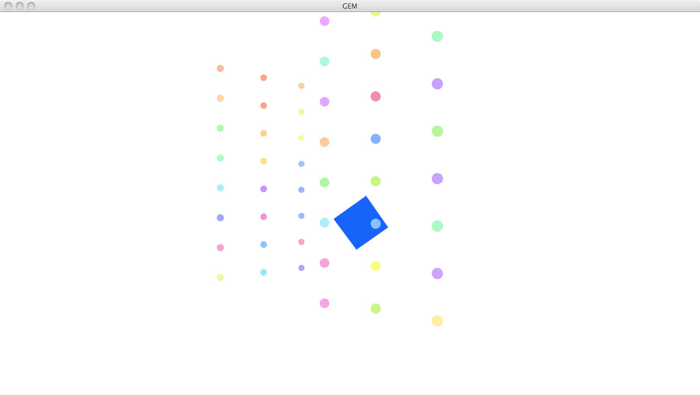
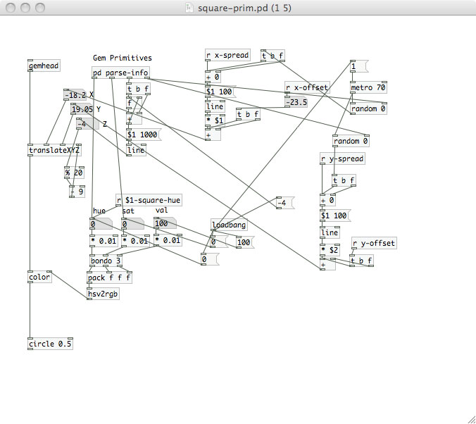
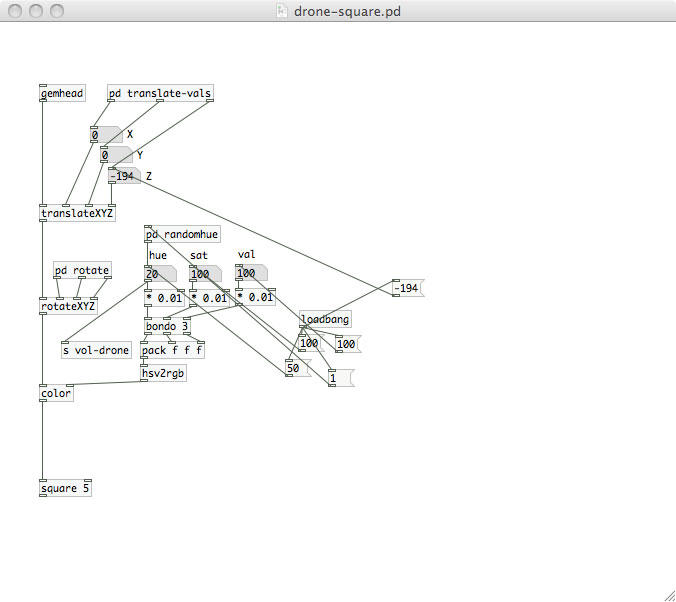

Dots N' Square
Visual music
Dots N' Squares, similar to the other Gem piece (Smoke2), plays with the idea of "visual music." Can musical elements translate to visual dissonance and consonance? What about a sound's physical properties? How does it all relate to the human psychology? In this piece, I use a sound's timbral quality to determine the reaction of the visual. I also include a background element (in both the sound and the visual) to provide both a contrast and a complement.
On the screen, jumping dots fly around. The amount that they move is determined by the roughness of the sound. The smoother the sound is, the more stable the dots become. The more dissonant the timbre is, the wilder the screen is. The square works in a fashion independent from this. Every time the drone changes pitch, the square moves, and a hue constantly generates via the drone's sawtooth wave. For the square, its timbral pattern relates secondarily to its pitch, providing a nice complement to the dots, but still sticks out through its ever changing amplitude.
Screenshots and Video:
Screenshot when sound is most consonant
Dot patch
Square Patch